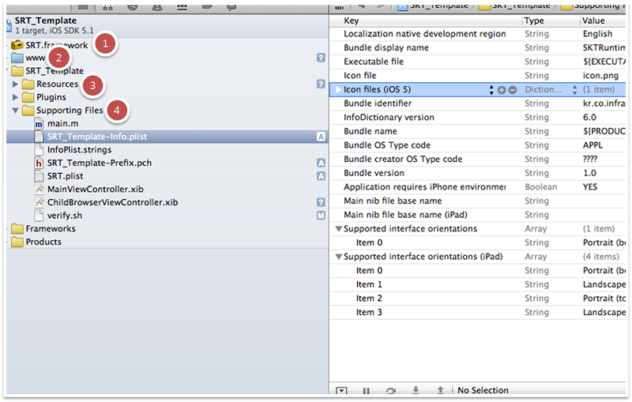
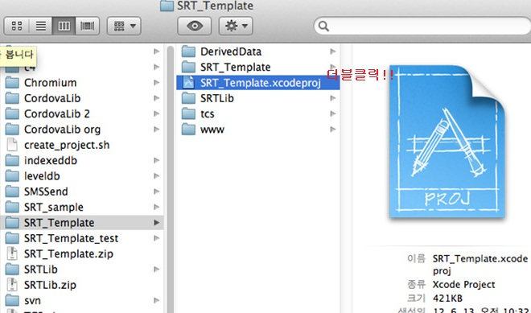
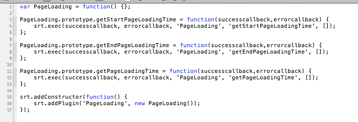
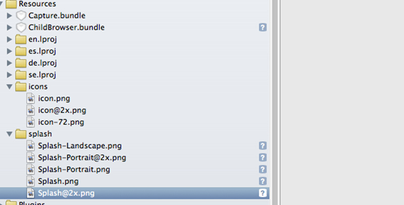
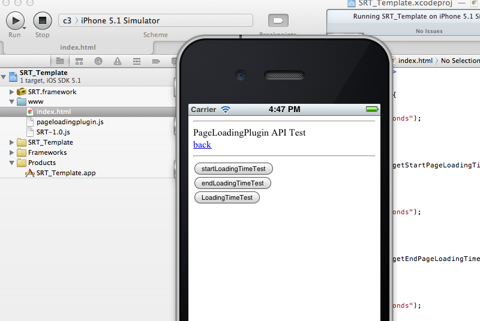

iOS Runtime 확장 구조 개발
iOS Runtime 확장 구조 개발 환경

- 아래 링크를 통하여 확장구조 개발에 필요한 iOs Native source와 JavaScript source 예제를 참조할 수 있다.
./sample/iOS_plugin_sample.zip
1) SRT.framework - Cornerstone Runtime Library
2) www - 실제 웹앱의 웹 리소스(HTML/CSS/JS/IMG) 와 Cornerstone Runtime JavaScript Library 가 저장되는 위치
- www : 웹앱의 저장 위치
- www/index.html : 웹앱의 첫 실행 파일
- www/SRT-0.9.1.js : Cornerstone Runtime JavaScript Library
3) SRT_Template/Resources - 어플에 필요한 리소스를 저장하는 위치
- icons : Icon을 위한 이미지 폴더
- splash : splash screen을 위한 이미지 폴더
4) SRT_Template/Supporting Files - 앱 및 런타임 설정 파일이 위치하는 폴더
- SRT_Template-Info.plist : iOS 앱을 위한 설정 파일
- SRT.plist : Cornerstone Runtime을 위한 설정 파일
- Plugins : 확장구조를 위한 폴더
iOS Runtime 확장 구조 개발 절차
step 1. Authoring tool을 이용해 iOS SRT_Template를 받아서 SRT_Template.xcodeproj 파일을 연다

step 2. 확장 구조 개발자는 아래의 그림과 같이 SRT_Template/Plugins 에 추가할 native 모듈에 대한 정의를 한다.

native 모듈을 개발을 위한 Objective-C 헤더 파일을 생성한다.
- SRT Framework의 RTPlugin.h 파일을 import 한다.
- 클래스 생성시 RTPlugin class 를 상속 받는다.
Javascript에서 불리울 함수를 선언한다. 함수 파라메터는 아래와 같다.
-(void)FUNCTIONNAME:(NSMutableArray*)arguments withDict:(NSMutableDictionary*)options;
full example code (RTPageLoading.h)
#import <SRT/RTPlugin.h> @interface RTPageLoading : RTPlugin { } -(void) getStartPageLoadingTime:(NSMutableArray*)arguments withDict:(NSMutableDictionary*)options; @endnative 모듈을 개발을 위한 Objective-C 소스 파일을 생성한다.
헤더에서 선언한 함수를 정의한다.
1) Javascript에서 array 형식으로 파라메터 전달시에는 NSMutableArray* arguments 로 전달 된다.
2) Javascript에서 구조체 형식으로 파라메터 전달시에는 NSMutableDictionary* options 로 전달 된다.
return 형은 RTPluginResult 이다. RTPluginResult 객체에 status와 message를 담는다. message는 생략 가능하다.
1) status : 성공 , message : double형태로 전달인 경우
RTPluginResult* result = [RTPluginResult resultWithStatus:RTCommandStatus_OK messageAsDouble:123456.789];2) status : 성공 , message : dictionary 형태로 전달인 경우
RTPluginResult* result = [RTPluginResult resultWithStatus:RTCommandStatus_OK messageAsDictionary:anydict];3) status : 실패 인 경우
RTPluginResult* result = [RTPluginResult resultWithStatus:RTCommandStatus_ERROR];Accelerometer와 같이 지속적으로 콜백을 호출하는 경우에는 RTPluginResult에 setKeepCallback API를 호출하여 설정 한다. 설정하지 않으면 콜백은 1회성으로만 전달된다.
[result setKeepCallback:[NSNumber numberWithBool:YES]];RTPluginResult 타입은 writeJavascript 함수를 통해 자바스크립트로 전달 가능하다. callbackID를 이용하여 호출자로 전달하며 callbackID는 arguments array의 첫번째 값이며 NSString 형태로 전달 된다.
1) callback id를 전달 받는 경우
NSString* callbackId = [arguments objectAtIndex:0];2) 호출자(javascript api)의 성공 콜백을 부르는 경우
[super writeJavascript:[result toSuccessCallbackString:callbackId]];3) 호출자(javascript api)의 실패 콜백을 부르는 경우
[super writeJavascript:[result toErrorCallbackString:callbackId]];
full example code (RTPageLoading.m)
#import "RTPageLoading.h" @implementation RTPageLoading -(void) getStartPageLoadingTime:(NSMutableArray*)arguments withDict:(NSMutableDictionary*)options { NSString* callbackId = [arguments objectAtIndex:0]; RTPluginResult* result = [RTPluginResult resultWithStatus:RTCommandStatus_OK messageAsDouble:123456.789]; [super writeJavascript:[result toSuccessCallbackString:callbackId]]; } @end}
step 3. 확장 구조 개발자는 아래의 그림과 같이 www 폴더의 .js 파일에 추가할 JavaScript 모듈에 대한 정의를 한다.

asset 폴더 내에 JavaScript plugin 을 위한 .js 파일을 생성한다.
JavaScript plugin 객체를 생성한다.
code example
var PageLoading = function() {};JavaScript Extension API 의 prototype을 정의 한다.
code example 1 (SuccessCallback, ErrorCallback , 매개변수가 없는 api)
PageLoading.prototype.getStartPageLoadingTime = function() { srt.exec(null, null, 'PageLoading', 'getStartPageLoadingTime', []); };code example 2 (SuccessCallback, ErrorCallback , 매개변수가 있는 api)
PageLoading.prototype.list = function(successCallback, failureCallback,params) { srt.exec(successCallback, failureCallback, 'PageLoading', 'list', [ params ]); };JavaScript plugin 객체를 Cornerstone Runtime JavaScript Library의 plugin으로 등록 한다.code example
srt.addConstructor(function() { //window.plugin.PageLoading 로 javascript 에 노출 된다. srt.addPlugin('PageLoading', new PageLoading()); });
Full Example (PageLoading.js)
var PageLoading = function() {};
PageLoading.prototype.getStartPageLoadingTime = function() {
srt.exec(null, null, 'PageLoading', 'getStartPageLoadingTime', []);
};
PageLoading.prototype.list = function(successCallback, failureCallback,params) {
srt.exec(successCallback, failureCallback, 'PageLoading', 'list', [ params ]);
};
srt.addConstructor(function() {
srt.addPlugin('PageLoading', new PageLoading());
});
step 4. 플러그 인을 Runtime에 등록하고자 할 때에는 개발한 js plugin 이름과 실제 구현된 Objective-C 클래스 이름을 SRT.plist 의 Plugins 의 Key / Value로 등록한다

- key 는 JavaScript 등록을 위해 srt.addPlugin() 에 등록되었던 이름이다.
value 는 plugin Objective-c 클래스 명이다.
plugin.xml
<key>Plugins</key> <dict> <key>PageLoading</key> <string>RTPageLoading</string> </dict>
step 5. 웹앱의 시작 파일은 반드시 index.html 이어야 한다. SRT-0.9.1.js는 template 기본 파일이다.

특정 웹페이지 내부에서 DeviceAPI를 사용하고 할 때에는 아래와 같이 JavaScript Library를 선언한다.
<script type="text/javascript" charset="utf-8" src=SRT-0.9.1.js"></script>특정 웹페이지 내부에서 추가된 Plugin을 사용하고 할 때에는 아래와 같이 JavaScript Library를 선언한다.
<script type="text/javascript" charset="utf-8" src="pageloadingplugin.js"></script>
Full Example 1. PageLoading Plugin(index.html) 사용 예제
<!DOCTYPE html>
<html lang="ko">
<head>
<meta charset="UTF-8">
<meta name="viewport" context="width-divice-width, initial-scele-1.0, user-scalble=no">
<script type="text/javascript" charset="utf-8" src="SRT-0.9.1.js"></script>
<script type="text/javascript" charset="utf-8" src="pageloadingplugin.js"></script>
<title>PageLoadingPlugin</title>
<script type="text/javascript">
function startLoadingTimeTest(){
function sc(time){
alert(time + " milliseconds");
}
function ec(){
alert("error");
}
window.plugins.PageLoading.getStartPageLoadingTime(sc,ec);
}
</script>
</head>
<hr> PageLoadingPlugin API Test<BR>
<button onclick="startLoadingTimeTest();">startLoadingTimeTest</button><br>
</body>
</html>
Example 2. CallLog Plugin 사용 예제
<script type="text/javascript" charset="utf-8" src="../path/calllogplugin.js"></script>
<title>CallLog Test</title>
<script type="text/javascript">
function calllogSC(obj){
if (obj.length > 0) {
alert(obj[0].number);
alert(obj[0].duration);
} else {
alert("empty call log");
}
}
function errorcallback(e) {
alert(e);
}
function getCallLogs() {
window.plugins.CallLog.list(calllogSC, errorcallback, "day");
}
</script>
step 6. Resources/icons 폴더 내부에 웹앱 개발자가 사용하고자 하는 아이콘 이미지를 프로젝트에 추가한다. 기본으로 설정된 icon 파일 이름은 icon이며 기본 설정일 경우 단말에 따라 적용되는 icon 파일 이름은 아래와 같다. icon 파일 이름 설정 방법은 step 5. 에서 다룬다.
- icon.png : Iphone 3GS 이전 모델 용 아이콘 이미지
- icon@2x.png : iphone 4/4s 용 아이콘 이미지
- icon-72.png : ipad / ipad2 용 아이콘 이미지
- icon-72@2x.png : new ipad 용 아이콘 이미지
{kind=link}
{kind=link}

step 7. Resources/splash 폴더 내부에 웹앱 개발자가 사용하고자 하는 스플래쉬 이미지를 추가한다. 기본으로 설정된 splash 파일 이름은 Splash이며 기본 설정일 경우 단말에 따라 적용되는 splash 파일 이름은 아래와 같다. splash 파일 이름 설정 방법은 step 6.에서 다룬다
참고로 스플래쉬 이미지란 웹앱 실행시 웹앱이 로딩될때까지 보여지는 이미지 화면을 뜻한다.
- Splash.png : Iphone 3GS 이전 모델용 스플래쉬 이미지
- Splash @2x.png : iphone 4/4s 용 스플래쉬 이미지
- Splash-Landscape.png : ipad / ipad2 용 가로 스플래쉬 이미지
- Splash-Portrait.png : ipad / ipad2 용 세로 스플래쉬 이미지
- Splash-Landscape@2x.png : new ipad 용 가로 스플래쉬 이미지
- Splash-Portrait@2x.png : new ipad 용 세로 스플래쉬 이미지
{kind=link}
{kind=link}
step 8. Supporting Files/SRT_Template-Info.plist 파일을 수정하여 어플의 여러 속성 설정이 가능하다. 이는 Cornerstone Runtime 프로젝트 뿐만이 아니라 iOS 어플 공통 적용사항이다. 아래는 주요 설정 값들이다.

- Bundle display name : 어플명
- Icon files / Icon files(iOS5) : 아이콘 이미지 파일 이름명
- Bundle identifier : 어플 고유 ID. 실제 단말 연동을 위해서는 애플사에 개발자 인증(provisioning profile)을 받아야하며 그때 설정한 ID를 넣는다.
- Supported interface orientations / Supported interface orientations(ipad) : 해당 어플이 지원하는 화면 회전 허용값. 예를 들어 Portrait(bottom home button)만이 설정되어 있다면 iPAD에서 회전을 하여도 실제로 화면이 회전되지 않는다.
step 9. Supporting Files/SRT.plist 파일을 수정하여 Cornerstone Runtime의 여러 속성 설정이 가능하다.

- UIWebViewBounce : 화면 드래그를 끝까지 했을 경우 웹뷰가 바운스 효과를 내는지 여부를 설정함.
- EnableLocation : 해당 어플이 Geolocation 을 설정할수 있는지 여부를 설정
- EnableViewportscale : 뷰포트 확대/축소 허용 여부를 설정
- AutoHideSplashScreem : Yes일 경우 DeviceReady가 되면 자동으로 스플래쉬 스크린이 해제된다. No일 경우 API를 통해서 원하는 시점에 해제가 가능하다
- SplashImage : 스플래쉬 스크린을 위한 이미지 파일명 설정. 기본은 “Splash"로 설정되어 있다.
- Plugins : Cornerstone Runtime JS 라이브러리와 Native Class간의 연동을 위한 Map이다. Key의 경우 JS 라이브러리를 위한 모듈명이며 Value의 경우 NativeClass 모듈명이다. 3rd 파티 개발자가 추가 플러그인을 개발할 경우에 사용한다.
- InstalledApplications : AppLauncher 모듈의 getInstalledApplications API 사용시 검색 가능한 어플리스트. 개발자가 어플리스트를 설정하면 getInstalledApplications API를 통해 어플 리스트중 실제 단말에 설치된 어플의 리스트를 가져올 수 있다. 어플리스트는 불려지는 어플에 설정된 URL Schemes에 설정된 값으로 리스트를 설정한다. 기본 설정은 기본 탑재 어플인 music, sms, mailto, videos 4가지가 설정되어 있다.
step 10. Run을 눌러서 실제 단말에서 웹앱이 정상적으로 실행되는지 확인한다.
